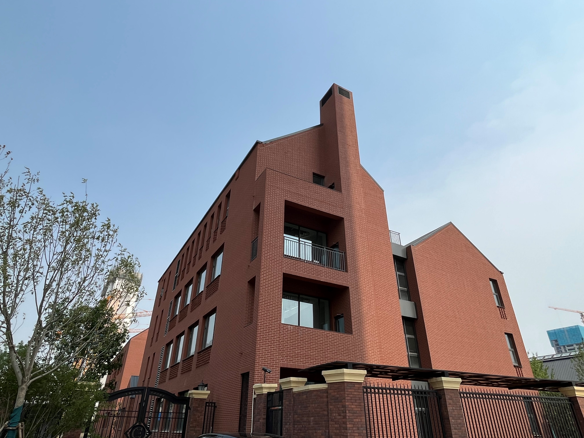
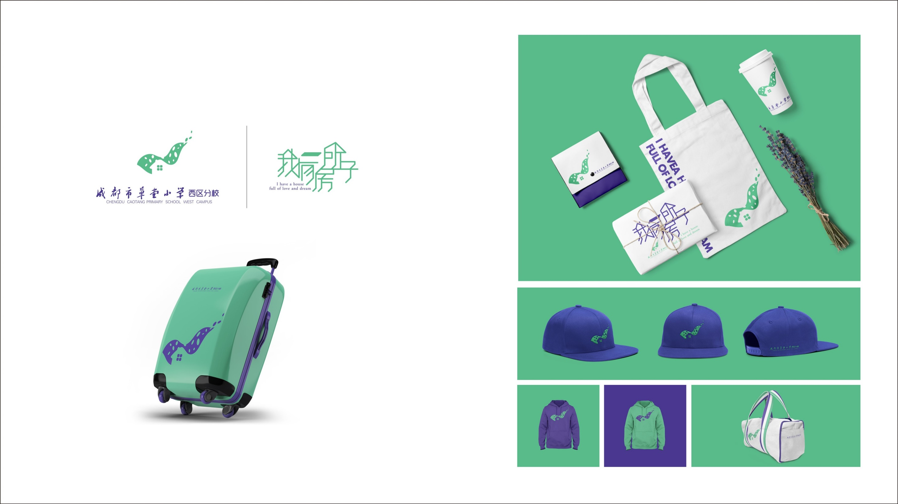
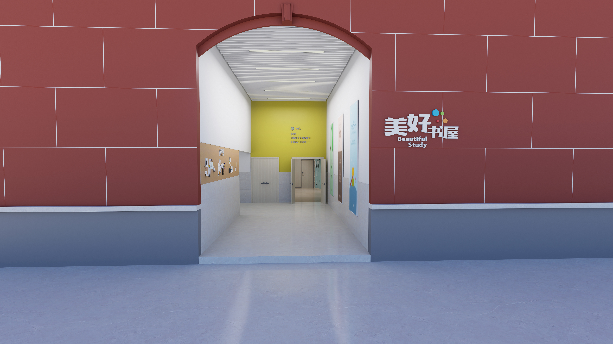

学校调研与诊断
进校考察、访谈、问卷与工作坊，厘清学校的现实问题与发展基础。
WENDUI / EDUCATION THINK TANK
寻找就寻见
问对以学校文化顶层设计为核心，将教育思想、办学理念、育人体系与品牌空间连成一个整体，帮助学校找到属于自己的发展表达。
01 / ABOUT WENDUI
问对缘起教育媒体，走进教师课堂，最终把工作落在学校发展的真实现场。
创始人李玉龙自2000年参与《教师之友》杂志，团队随后开展教师研修、校长培养与学校文化建设。成都问对教育顾问有限公司于2009年注册。今天，问对持续以“为学校立魂”为使命，把专业研究、策划创意、视觉设计与空间表达连接起来。
了解问对的发展历程 ↗WHAT WE BELIEVE
“相信话语的力量，
相信专业的力量，
相信结构的力量。”
学校文化不是一组口号。它应当回答学校为何而办、培养怎样的人，并在课程、课堂、教师发展和校园环境中被持续看见。
02 / OUR SERVICES
从诊断到表达，从理念到落地。每一步都围绕学校自身的历史、现状与未来展开。
进校考察、访谈、问卷与工作坊，厘清学校的现实问题与发展基础。
梳理办学理念、育人目标、发展目标与一训三风，确立学校共同的方向。
围绕学生成长，连接管理、课程、课堂、师资、环境与家校社协同。
提炼办学宣言与核心话语，设计标志、吉祥物及可持续使用的视觉语言。
将文化转化为应用系统、导视、主题景观与关键空间场景。
03 / SELECTED WORK
从文化系统到视觉与空间，以下内容选自问对2026年公司发展资料。

博雅教育，朗润一生
项目从办学理念系统出发，提出“培养具有担当精神、广博学识和优雅气质的博雅少年”，并延伸到书院治理、课程、课堂、教师发展与校园场景。
学校符号与视觉应用的系统实践，让文化理念进入日常物品与传播场景。


04 / OUR JOURNEY
问对的路径始终围绕教育中的真问题展开。
从《教师之友》杂志出发，参与教育思想讨论。
“第一线教师研修班”开启，连接一线教师。
开始学校文化顶层设计实践。
成都问对教育顾问有限公司正式注册。
“第一线校长学校”开启，支持校长成长。
举办第一届学校文化创新问对。
05 / THE PEOPLE
问对将教育研究、学校管理、视觉美学和空间设计的专业力量连接在同一个项目中。
问对教育创始人，曾任《教师之友》《读写月报·新教育》主编。
问对教育智库理事长，长期从事学校管理与办学实践。
问对设计总监，专注学校视觉美学与品牌表达。
问对空间设计总监，深耕学校场景创设。
06 / CONTACT WENDUI
如果你正在思考学校文化、育人体系、教育品牌或校园空间，欢迎通过问对官方渠道了解我们的工作。
关注问对官方账号